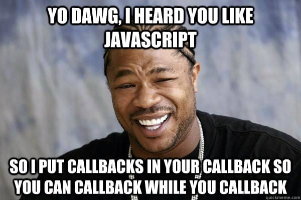

12 Asynchronous Programming in JavaScript
This topic about asynchronous will be divided into two parts. The first part is discussing that asynchronous programming is main feature in JavaScript programming langauage and also short introuction to a Promise object
In the second part, we will see more closely to the Promise object and the use of await expression and async function.
Di tahap pertama ini kita akan membahas dua hal berikut:
- Mengenal pemrograman asinkronus
- Contoh program asinkronus sederhana
12.1 Understanding the principle of asynchronous programming
Sebelum mengerti asinkronus, kita harus mengerti bahwa pemroograman sinkronus adalah semua progran yang telah kita pelajari di bagian sebelumnya yaitu saat setiap perintah-perintah (statements) dieksekusi secara berurutan, setiap perintah akan dieksekusi setelah perintah yang dipanggil (umumnya di baris sebelumnya) telah selesai dijalankan.
Program asinkronus merupakan program yang dapat berjalan tanpa harus menunggu program lain selesai melakukan proses eksekusinya. Misal ada dua program yang satu melakukan download lagu, dan yang lain memutar file MP3. Atau saat kalian membuka aplikasi Instagram, kalian juga menerima notifikasi pesan masuk dari aplikasi WhatsApp. Bisa dikatakan hampir semua aplikasi yang ada di laptop/PC atau smartphone yang kita gunakan berbasis pada pemrograman asinkronus.
Detail pemrograman asinkronus ini bekerja pada level prosesor bukanlah menjadi persoalan yang kita harus pelajari. Namun tata cara menggunakan fitur pemrograman asinkronus di JavaScript adalah yang sangat perlu kita pelajari.
Berikut sedikit ilustrasi perbandingan pemrograman sinkronus dan asinkronus menurut (Haverbeke, 2018)

Dari gambar di atas terdapat istilah threads yang merupakan potongan kode yang dijalankan pada suatu proses dalam suatu prosesor. Prosesor menjalankan proses besar yang terdiri dari beberapa threads. Seperti sistem operasi merupakan proses besar yang terdiri dari potongan program program kecil untuk mengatur hubungan antara hardware di dalam komputer dan sistem I/O (input/output termasuk monitor, keyboard, dan mouse)
Program-program yang kita buat di dalam Node.js dijalankan oleh thread ini.
Garis biru menunjukkan perjalanan waktu saat suatu program dieksekusi. Garis merah adalah ketika program melakukan suatu request ke server. Ketika kita menggunakan pemrograman sinkronus, kita harus menunggu program pertama selesai melakukan request, baru kita bisa menjalankan program kedua.
Jika kita lakukan dengan dua threads, kita tidak bisa mengkomunikasikan antara dua program ini misal program kedua akan melakukan instruksi kedua (setelah program kedua melakukan request).
Namun dengan asinkronus, kita bisa membuat dua-duanya berjalan beriringan. Dan ketika program pertama selesai melakukan request maka instruksi program kedua bisa langsung dijalankan tanpa perlu melakukan request oleh program kedua ini.
Bisa dikatakan, program pertama tetap berjalan di background sembari kita bisa menjalankan program kedua. Kemampuan seperti ini sangatlah diperlukan misal kita ingin menunggu input dari user dan melakukan suatu aksi ketika user melakukan suatu input ke dalam program kita. Mirip seperti while loop yang akan terhenti jika ada user input namun kita disini membiarkan program pertama terus berjalan.
12.2 An example of asynchronous program
Berikut ini adalah program yang menunjukkan penggunaan pemrograman asinkronus. Terdapat istilah fungsi callback yang artinya fungsi ini akan menjadi suatu argument untuk fungsi lain (sebut parent function). Parent function ini akan berjalan di background (tetap dieksekusi) sampai suatu event terjadi yang mengakibatkan fungsi callback dieksekusi atau lebih tepatnya dipanggil (invoking).
Pada program pertama ini, fungsi setTimeout() memerlukan dua input
argument. Pertama adalah callback function yang akan dipanggil setelah
jeda (delay) waktu pada input argument kedua selesai.
Pada contoh ini kita menginputkan argument delay sebanyak 2 detik.
Input argument ini bersatuan millisecond, jadi kita inputkan 2 detik
sebagai 2,000 milliseconds.
timer-set-timeout.js
// Only run once after put a delay of 2 secons
console.log("delay two seconds from now");
const callbackFunc = () => {console.log("run after two seconds")};
setTimeout(callbackFunc, 2_000);
console.log("Do something during 2 secs");Program kedua kita memiliki nested callback function. Artinya
Callback function di dalam callback function di dalam callback function,
dan seterusnya. Di program kedua ini, callbackFunc() merupakan
callback function untuk setInterval() dan variable updateInterval()
yang merupakan referensi ke fungsi setInterval() menjadi bagian dari
callback function stop_callbackFunc().
Dan terakhir stop_callbackFunc() merupakan argument fungsi setTimeout().
timer-set-interval.js
// The following program will print sequentially
// numbers from 1 to 10 with each one second delay
let state = {num: 0}
let callbackFunc = () => {
state.num += 1;
console.log(state.num)};
// Call callbackFunc in one second and then again repeat
// every second after that
let updateIntervalId = setInterval(callbackFunc, 1_000);
// setInterval() returns a value that we can use to stop the
// repeated invocations by calling clearInterval()
function stop_callbackFunc() {
clearInterval(updateIntervalId);
}
setTimeout(stop_callbackFunc, 10_500); // add a little bit milliseconds
// from 10 secs.Kita lihat disini kerumitan yang ditimbulkan dengan alur penggunaan
callback function yang saling berkaitan. Kita akan melihat di
bagian kedua bahwa hal ini dapat kita sederhanakan dan penulisan program
menjadi lebih elegan menggunakan objek Promise.

Untuk contoh terakhir, program terdiri dari tiga berkas yaitu
events-demo.html, events-demo.css, dan events-demo.js.
Program ini akan memberikan kita tampilan di berkas .html
berupa tombol untuk mengubah-ubah warna suatu teks.
Buat suatu folder bernama events dan taruh ketiga berkas tersebut
(.html, .css, dan .js) dalam folder tersebut.
events-demo.html
<html>
<head>
<link rel="stylesheet" href="./events-demo.css"></style>
</head>
<body>
<div id="output">
<h3>Hello world!</h3>
</div>
<button id="change">Change color</button>
<script src="./events-demo.js"></script>
</body>
</html> events-demo.css
events-demo.js
function changeColor() {
outElement = document.getElementById("output");
// console.log(outElement.className);
let currentClass = outElement.className;
if (currentClass === "" || currentClass === "green") {
outElement.className = "red";
} else {
outElement.className = "green";
}
}
let btnChange = document.getElementById("change");
btnChange.addEventListener("click", changeColor);12.3 Introduction to Promise object
Objek Promise, adalah suatu objek khusus yang menangani manajemen fungsi yang memiliki perilaku asinkronus. Perilaku asinkronus disini artinya fungsi tersebut dapat dijalankan secara asinkronus yang artinya memberikan fitur non-blocking terhadap fungsi lain atau program lain yang dijalankan (ingat kembali terkait program timer-set-timeout.js).
Apabila kita menuliskan program asinkronus menggunakan callback function, maka kita memiliki masalah banyaknya nested function ketika kita membuat program asinkronus dengan jumlah fungsi asinkronus cukup banyak dan membuat program kita nampak tidak terstuktur. Promise object mampu menangani ini.
Cara mengubah dari program asinkronus yang menggunakan callback function
adalah dengan mengganti susunan callback function tersebut dengan
method .then(callbackFunc) yang tersedia dalam Promise object
Sintaks dari penulisan Promise object:
Makna dari program tersebut adalah p1 adalah suat fungsi yang menghasilkan
atau memberikan nilai return Promise object. Jika eksekusi Promise
object ini selesai (disebut settled) maka akan ada dua kemungkinan
Ekseksui fungsi p1 menghasilkan nilai return yang diinginkan (disebut
fulfilled) atau fungsi p1 mengalami error ditengah ekseksi
(disebut rejected). Jika fungsi p1 berada di state fulfilled,
maka callbackFunc1 dijalankan.. Dan pemanggilan callbackFunc1 dilakukan
dan memberikan hasil berupa Promise object.
Proses ini terus dilanjutkan sama seperti proses eksekusi fungsi p1,
hingga kita berhasil memanggil callbackFunc2. Namun jika selama proses
eksekusi di atas terjadi error atau Promise object berada di keadaan
rejected, maka perintah callbackErrorHandler yang akan dijalankan.
Promise object juga mampu memberikan aliran program seperti air yang
mengalir dari anak tangga menuju anak tangga berikutnya. Tiap-tiap
anak tangga ini adalah kombinasi methods .then() dan .catch()
(bisa juga menambahkan .finally() namun disini kita cukup menggunakan
.then() dan .catch()).
12.4 Some practical use of Promise object
Berikut contoh program asinkronus yang menggunakan struktur
Promise object yang ditulis
menggunakan .then()
Pada program ini kita menggunakan restcountry API yang menyediakan beberapa data-data umum terkait negara-negara di dunia. Dan kita akan mencetak GINI indeks untup tiap negara.
promise-and-error-restcountryAPI.js
// Fetch A JSON api to demonstrate .catch
function displayData(message) {
for (let country of message) {
if (country.gini) {
console.log(country.name.common, country.gini);
}
}
}
function c1(response) {
if (!response.ok) {
return null;
}
console.log(response.status)
// Now check the headers to ensure that the server sent us JSON
// If not, the server is broken.
let type = response.headers.get('content-type');
console.log(type);
if (type !== "application/json") {
throw new TypeError(`Expected JSON, got ${type}`);
}
// If we get here, then we got a 2xx status and a JSON content-type
// so we confidently return a Promise for the response body as a JSON object
let p4 = response.json();
console.log(p4);
return p4;
}
function c2(message) {
if (message) {
displayData(message);
}
else {
console.log("Message is null or undefined");
}
}
function c3(err) {
if (err instanceof TypeError) {
// This happens if we throw TypeError above
console.log("Something is wrong with the server");
}
else {
// This must be some kind of unanticipated error
console.error(err);
}
}
// https://gitlab.com/restcountries/restcountries
const url = "https://restcountries.com/v3.1/all"
console.log(url);
let p1 = fetch(url)
.then(c1)
.then(c2)
.catch(c3);Perhatikan contoh di atas bahwa program mulai dijalankan
dari bagian let p1 = fetch(url) dan Promise object akan diteruskan
ke pemanggilan callback .then(c1)
berikutnya ke pemanggilan callback .then(c2).
Apabila terjadi error di tengah jalan, callback c3 akan dipanggil.
Diagram waktu untuk proses ini cukup rumit, namun dapat digambarkan sebagai berikut. Pada pertemuan kuliah akan dijelaskan kembali.

12.5 await and async
Merupakan dua buah keyword yang cukup penting dan akan sering dijumpai ketika bekerja dengan program JavaScript yang memiliki fitur interaktif artinya ada interaksi antara user dengan aplikasi atau trigger lain yang mengakibatkan suatu proses dijalankan.
Keyword pertama yaitu await digunakan supaya suatu keadaan di
Promise object menjadi keadaan settled.
Di dalam Promise object dikenal tiga macam keadaan yaitu:
- pending: Suatu objek Promise yang sedang dalam proses eksekusi.
- fulfilled: Suatu objek Promise yang telah menyelesaikan eksekusinya dan telah memberikan suatu output nilai.
- rejected: Suatu objek Promise yang mengalami suatu error atau masalah di dalam proses eksekusinya, sehingga akan memberikan nilai output berupa objek error.
Selain tiga macam keadaan tersebut, ada beberapa tambahan istilah yang sering
digunakan dalam objek Promise:
- settled: Suatu objek Promise yang berada pada keadaan fulfilled atau
rejected.
- resolved: Suatu objek Promise yang berada pada keadaan pending dan
keadaan settled atau tidaknya dipengaruhi oleh objek Promise lain berada
pada keadaan settled atau tidak.
Ke-empat istilah di dalam objek Promise tersebut lebih mudah dimengerti dengan
diagram berikut

Untuk resolved, silahkan dilihat pada gambar sebelumnya.
Keyword kedua adalah async. Keyword ini adalah pelengkap dari penggunaan
keyword await. Karena dalam aturan penggunaan await, apabila
await digunakan di dalam deklarasi atau body of function suatu fungsi lain (
kita sebut fungsi lain ini fungsi parent),
maka fungsi parent tersebut harus di-set supaya menjadi fungsi asinkronus
dengan cara menambahkan async keyword di depan deklarasi fungsi parent
tersebut.
Berikut contoh penggunaan await dan async. Kita lihat fungsi fetchData()
dan main() memuat keywords await di dalam body of function (await delay(2000)
dan await fetchData() berturut-turut). Secara aturan kedua fungsi parents
ini harus di awali async keyword supaya berjalan sebagaimana mestinya.
await-and-async.js
// A function that simulates an asynchronous operation with a delay
function delay(ms) {
return new Promise((resolve) => setTimeout(resolve, ms));
}
// An asynchronous function that uses the "await" keyword
async function fetchData() {
console.log("Fetching data...");
await delay(2000); // Simulating a delay of 2 seconds
console.log("Data fetched!");
return { message: "Hello, World!" };
}
// Using the "await" keyword to wait for the asynchronous function to complete
async function main() {
console.log("Start");
const result = await fetchData();
console.log(result.message);
console.log("End");
}
// Calling the main function
main();Dari contoh di atas, apabila keyword async dan await dihilangkan maka
delay(2000) akan dijalankan di tahapan terakhir.
Exercises
Bacalah topik mengenai pemrograman asinkronus di dalam buku (Haverbeke, 2018) - Bab 11. Jelaskan dan gambarkan keterkaitan hal apa saja yang telah kalian pahami di subbab Asynchronicity, Crow Tech, dan Callbacks. Catatan: Jawaban setiap mahasiswa harus berbeda. Jawaban yang sama akan dibagi ke jumlah mahasiswa yang menjawab jawaban sama persis
Pelajari penggunaan Web API fetch dari blog berikut: JavaScript fetch API Ultimate Guide Tuliskan hal yang kalian benar-benar pahami. Dan tuliskan juga hal yang belum bisa kalian pahami dari tulisan dalam blog tersebut.
Bacalah dengan seksama kembali pertemuan ini dan tuliskan kembali dengan menggunakan bahasa yang kalian pahami terkait Promise, async, dan await. Hanya tulis yang kalian benar-benar pahami. Bisa juga kalian menanbahkan hasil eksplorasi dari internet jika diperlukan untuk memperjelas apa yang kalian tulis. Jawaban yang sama akan dibagi dengan jumlah mahasiswa yang memiliki jawaban sama.
Susunlah suatu program menggunakan Promise object dan fungsi
fetchdan packagenode-html-parseruntuk melakukan scraping nama heroes dalam game Mobile Legends dan pasangan URL untuk masing-masing hero. Scraping dimulai dilakukan dari laman berikut:https://mobile-legends.fandom.com/wiki/List_of_heroesJika program yang dibuat benar, maka akan ditampilkan hasil seperti berikut di layar
consoleVSCode.